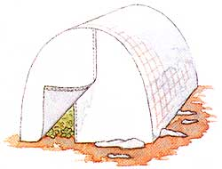

I was going back through some of my old issues of Mother Earth News and came across an article about making wire-mesh tomato towers. I remember glossing over the article since I have employed these for the last eight years. I did want, however, to share something I just started doing these last few years. I wanted to extend my growing season a few more weeks but didn't want to spend a lot of extra cash. I then had the idea to open my tomato towers, lay them down lengthwise over prepared beds (6 feet long by 2 feet wide) and use plastic sheeting (cut into the appropriate lengths) to make the best little greenhouses in Kansas. I was able to add three weeks to my growing season by using these minigreenhouses.
FATHER PAUL AGIOPAVLITES
Wichita, Kansas
For more on this very idea, see "Wire Mesh in the Garden," Page 96-MOTHER
|
 |
|
|